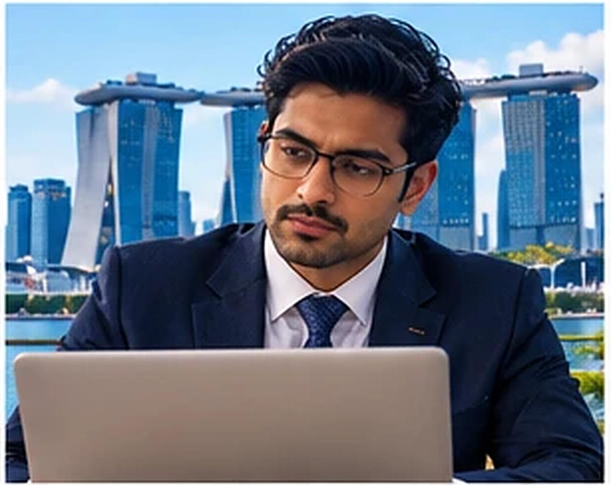

English law is the second most common governing law at the Singapore and Hong Kong arbitration centres.
The SQE is the one exam that makes you a solicitor of England and Wales. It is open to Indian advocates, and the written parts are taken in India.

Singapore and Hong Kong are closer, familiar and full of Indian professionals. The legal roles there, though, go to lawyers with a recognised common-law qualification.
Both hubs run on English-law work. A quarter of SIAC cases apply English law, and it is the second most common governing law in Hong Kong as well. International firms in both cities staff those matters with English-qualified lawyers.
An England and Wales qualification earned from India is the credential that moves you from the Indian desk to the international one.
Seven evenings for Rs 100 that cover the Asia markets on Day 1 and the route to qualify in English law from India.
LawSikho runs the Crack the SQE course and this low-cost entry to it: a 7-day community that puts the whole route in front of you before you spend on anything else. Two mentors run every session: Prem Deep Arora, lead mentor on SQE and strategy, and Arpana Sachdeva, community manager, who leads the orientation, the mock, the pathways and the Q&A. Avlokit Yadav, counsellor, speaks to you one to one about your own roadmap.
Every day: a reading PDF at 12 PM, a 5-question MCQ poll at 2 PM, the answer key at 6 PM, a learner case study at 4 PM, and the live session at 8 PM. Live only, no recordings. Complete all seven days and you receive a certificate of participation.
Members of the LawSikho Crack the SQE programme. Individual experiences, not typical results.
This is the part most lawyers never see written down. English law is not only a qualification. It is one of Britain's largest exports, and the people delivering it are increasingly not sitting in England.
Sources: The Law Society of England and Wales, International Data Insights Report 2025 (citing TheCityUK); LCIA Annual Casework Report 2024.
On Day 1 the mentors walk through what that market pays and how a qualified Indian lawyer enters it: regional UK firms that cannot hire, Gulf free-zone firms, Singapore and Hong Kong practices, and international in-house teams. Salary ranges are shown with their sources in the session, not here, because they depend on the market, the role and you.
The return is four things, not one: income, time, optionality and risk control. A second market is a hedge against the first.
[DATES: 7 evenings, 8 PM IST, to confirm]. Rs 100, including GST. Live only, no recordings. A certificate of participation when you complete all seven days.
Join the SQE Community for Rs 100After payment you get the WhatsApp group link. The first reading PDF arrives at 12 PM on Day 0.